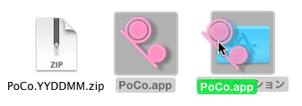
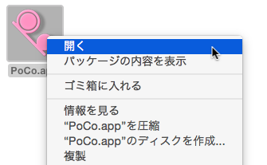
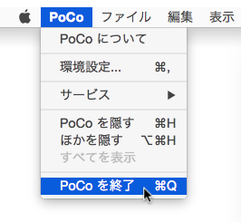

Install the PoCo.app
Download the PoCo.app.yymmdd.zip(the package of the PoCo.app, yymmdd: year, month, day) via this page.
Drag and Drop the PoCo.app to /Application/ directory after extract from the PoCo.app.yymmdd.zip. Note that, Sorry, an Installer is not avaliable.

Bootstrap
The PoCo.app open on the Finder.app.

Quit
Select menu, when you want to quit the PoCo.app.
